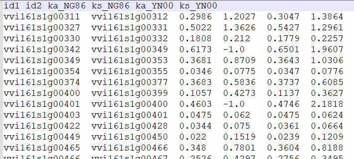

Non-synonymous (Ka) and synonymous (Ks)¶
Non-synonymous (Ka) and synonymous (Ks) substitution rates are estimated using the Nei-Gojobori method implemented in the YN00 program in the PAML (4.9h)
Parameters
Parameters |
Standards and instructions |
cds_file |
Type: file | Default: - A cds file of one or more genomes. |
pep_file |
Type: file | Default: - A protein file for one or more genomes. |
align_software |
Type:{ muscle, mafft } | Default: muscle Software of multiple sequence alignment. |
pairs_file |
Type: file | Default: - Colinearscan or MCScanX result file or gene pairs divided by tab. |
ks_file |
Type: file | Default: - The output file name of ks. |
Use command to enter the folder wgdi -ks ? >> total.conf Take out the parameter file.
[ks]
cds_file = cds file
pep_file = pep file
align software = muscle
pairs_file = gene pairs file
ks_file = ks result
Quick start
After the parameters are modified properly, then run wgdi -ks total.conf
Example
The original results are easily accessible at wgdi-example
